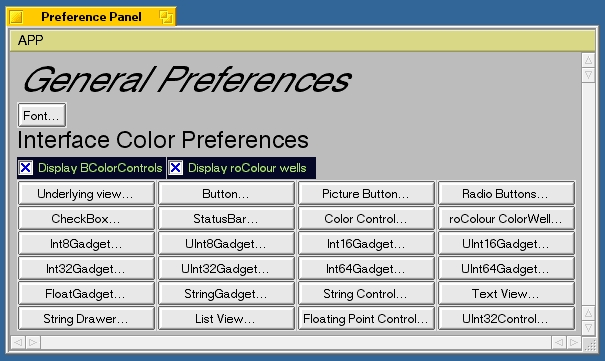

The preference panel gives access to all the other specific preference panels. Select any of the buttons to get control over the specific gadget listed on it's label.
There are two general preference settings on this panel as well. These checkboxes control which of the two styles of color controls you will be presented with when making color selections in the interface color preference panels. By default, both are on. One is a standard BColorControl the other is my homemade roColour (check out: http://www.rodesign.com) Colorwell. You may have either or both on, of course, if you have neither on, you will have no controls for color selection--a dumb move!

for version 1.4.2
Copyright © 1998-1999 Ed Musgrove Be Developer #2076. All rights reserved.
edgar@harbornet.com
emusgrov@linknet.kitsap.lib.wa.us
Last modified March 17, 1999.